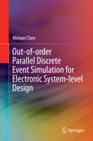

listed by publication type (list by date)
J3. Weiwei Chen, Xu Han, Che-Wei Chang, Rainer Doemer,
"Out-of-Order Parallel Discrete Event Simulation for Transaction Level Models",
IEEE Transactions on Computer-Aided Design of Integrated Circuits and Systems (TCAD), vol.33, no.12, pp.1859-1872, December 2014
J2. Weiwei Chen, Xu Han, Che-Wei Chang, Rainer Doemer,
"Advances in Parallel Discrete Event Simulation for Electronic System-Level Design",
IEEE Design and Test of Computers,
vol.30, no.1, pp.45-54, January/February 2013
J1. Weiwei Chen, Xu Han, Rainer Doemer,
“Multi-core Simulation of Transaction Level Models using the System-on-Chip Environment”,
IEEE Design and Test of Computers,
vol.28, no.3, pp.20-31, May/June 2011
B1. Weiwei Chen,
“Out-of-order Parallel Discrete Event Simulation for Electronic System-level Design”, Springer International Publishing Switzerland (ISBN 978-3-319-08752-8
EDAA Outstanding Dissertation Award), 2014

C13. Weiwei Chen, Xu Han, Rainer Doemer,
""May-Happen-in-Parallel Analysis based on Segment Graphs for Safe ESL Models",
in Proceedings of the
Design, Automation and Test in Europe (DATE) Conference,
2014 (long paper, acceptance rate: 15.3%) Best Paper Award
C12. Xu Han, Weiwei Chen, Rainer Doemer,
"Designer-in-the-Loop Recoding of ESL Models using Static Parallel Access Conflict Analysis", in Proceedings of the
16th International Workshop on Software and Compilers for Embedded Systems (SCOPES),
St. Goar, Germany, June 2013
C11. Weiwei Chen and Rainer Doemer,
"Optimized Out-of-Order Parallel Discrete Event Simulation Using Predictions", in Proceedings of the
Design, Automation and Test in Europe (DATE) Conference,
Grenoble, France, March 2013 (long paper, acceptance rate: 16.4%)
C10. Weiwei Chen, Che-Wei Chang, Xu Han, Rainer Doemer,
“Eliminating Race Conditions in System-LevelModels by using Parallel Simulation Infrastructure”, invited by the
IEEE International High Level Design Validation and Test Workshop (HLDVT),
Huntington Beach, California, November 2012
C9. Weiwei Chen, Xu Han, Rainer Doemer,
“Out-of-order Parallel Simulation for ESL Design”, in Proceedings of the
Design, Automation and Test in Europe (DATE) Conference,
Dresden, Germany, March, 2012 (long paper, acceptance rate: 16%)
C8. Weiwei Chen and Rainer Doemer,
“An Optimizing Compiler for Out-of-Order Parallel ESL Simulation Exploiting Instance Isolation”, in Proceedings of the
17th Asia and South Pacific Design Automation Conference (ASP-DAC),
Sydney, Australia, February 2012
C7. Rainer Doemer, Weiwei Chen, Xu Han,
“Parallel Discrete Event Simulation of Transaction Level Models”, in Proceedings of the
17th Asia and South Pacific Design Automation Conference (ASP-DAC),
Sydney, Australia, February 2012
C6. Rainer Doemer, Weiwei Chen, Xu Han, Andreas Gerstlauer,
“Multi-Core Parallel Simulation of System-Level Description Languages”, in Proceedings of the
16th Asia and South Pacific Design Automation Conference (ASP-DAC),
Yokohama, Japan, January 2011
C5. Weiwei Chen, Xu Han, Rainer Doemer,
“ESL Design and Multi-Core Validation using the System-on-Chip Environment”, in Proceedings of the
15th IEEE International High Level Design Validation and Test Workshop (HLDVT),
Anaheim, CA, USA, June, 2010
C4. Weiwei Chen, Rainer Doemer,
"A Fast Heuristic Scheduling Algorithm for Periodic ConcurrenC Models", in Proceedings of the
15th Asia and South Pacific Design Automation Conference (ASP-DAC),
Taipei, Taiwan, January, 2010
C3. Guoyong Shi, Weiwei Chen, C.-J. Richard Shi,
“A Graph Reduction Approach to Symbolic Circuit Analysis”, in Proceedings of the
12th Asia and South Pacific Design Automation Conference (ASP-DAC),
Yokohama, Japan, January 2007, pp. 197 - 202
C2. Rongrong Zhong, Yongxin Zhu, Weiwei Chen, Mingliang Lin, Weng Fai Wong,
“An Inter-core Communication Enabled Multi-core Simulator Based on SimpleScalar”, in Proceedings of the
4th IEEE International Symposium on Embedded Computing (SEC-07),
Niagara Falls, CA. May 23-27, 2007
C1. Weiwei Chen, Guoyong Shi,
“Implementation of a Symbolic Circuit Simulator for Topological Network Analysis”, in Proceedings of
IEEE Asia Pacific Conference on Circuit and System 2006 (APCCAS),
Singapore, December 2006, pp. 1327-1331
BC2. Weiwei Chen, Rainer Doemer,
“ConcurrenC: A New Approach towards Effective Abstraction of C-based SLDLs”,
Analysis, Architectures and Modeling of Embedded Systems (ed. A. Rettberg, M. Zanella, M. Amann, M. Keckeisen, F. Rammig),
Springer, 2009, ISBN 978-3-642-04283-6
BC1. Weiwei Chen, Guoyong Shi,
“Symbolic Analysis of Analog Integrated Circuits”,
Embedded Systems and Materials Research for Advanced Applications,
the 1st Chinese-German Summer School in Shanghai, September, 2006, ISBN-10: 3-00-019576-9 / ISBN-13: 978-3-00-019576-1
P4. Balavinayagam Samynathan, Shahrzad Mirkhani, Weiwei Chen, John Davis, Maysam Lavasani and Behnam Robatmili
"Accelerating Big Data Workloads with FPGAs",
Hot Chips: A Symposium on High Performance Chips, 2017
P3. Weiwei Chen and Rainer Doemer,
“Out-of-order Parallel Simulation for Electronic System-Level Design”, in
EDAA/ACM SIGDA PhD Forum at the Design, Automation and Test in Europe Conference (DATE),
Grenoble, France, March 2013
P2. Weiwei Chen and Rainer Doemer,
“Parallel Discrete Event Simulation for ESL Design”, in
SIGDA Ph.D. Forum at the Design Automation Conference (DAC),
San Francisco, California, June 2012
P1. Weiwei Chen and Rainer Doemer,
“Out-of-order Parallel Discrete Event Simulation for ESL Design”,
Graduate Student Poster Presentation,
Faculty Retreat, Department of Electrical Engineering and Computer Science, University of California at Irvine, September 2012
TR5. Xu Han, Weiwei Chen, Rainer Doemer,
“A Parallel Transaction-Level Model of H.264 Video Decoder”,
TR-11-03, Center for Embedded Computer Systems, UC Irvine, June, 2011
TR4. Weiwei Chen and Rainer Doemer,
“A Distributed Parallel Simulator for Transaction Level Models with Relaxed Timing”,
TR-11-02, Center for Embedded Computer Systems, UC Irvine, May, 2011
TR3. Weiwei Chen, Rainer Doemer,
"ConcurrenC: A Novel Model of Computation for Effective Abstraction of C-based SLDLs",
TR-09-07, Center for Embedded Computer Systems, UC Irvine, May 27, 2009
TR2. Weiwei Chen, Siwen Sun, Bin Zhang, Rainer Doemer,
"System Level Modeling of a H.264 Decoder",
TR-08-10, Center of Embedded Computer System, UC Irvine, August 12, 2008
TR1. Weiwei Chen, Rainer Doemer,
"System Specification of a DES Cipher Chip",
TR-08-01, Center of Embedded Computer System, UC Irvine, January 28, 2008
Weiwei Chen,
"Out-of-order Parallel Discrete Event Simulation for Electronic System-Level Design",
Ph.D. Disseration, University of California, Irvine, August, 2013
Weiwei Chen,
"A Symbolic Analog Circuit Simulator",
Master's Degree Thesis, Shanghai Jiao Tong University, January, 2007
08/24/17 Weiwei Chen (weiwei.chen@uci.edu)
This page was created using GitHub Pages —
Theme by orderedlist and
with modifications by Weiwei Chen
{kind=link}